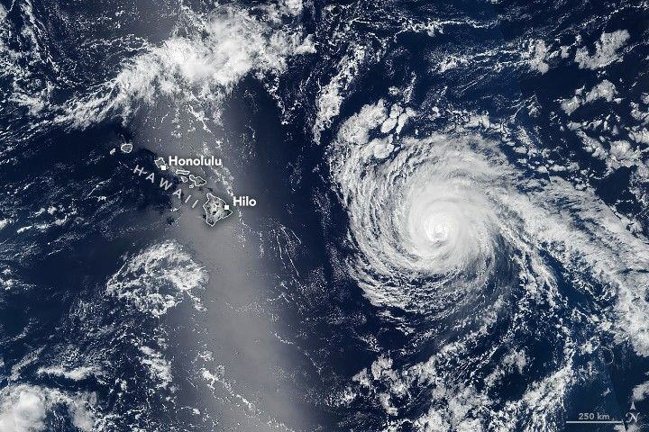

Hurricane Kiko Nears Hawaii
Developing as a tropical depression in the eastern Pacific on August 31, 2025, Kiko intensified into a major hurricane while churning west toward the Hawaiian Islands. The storm weakened as it approached land and was forecast to skirt the islands to the north. Still, the state braced for dangerous surf from the passing storm.
The VIIRS (Visible Infrared Imaging Radiometer Suite) on the Suomi NPP satellite acquired this image of Hurricane Kiko at about 1:30 p.m. Hawaii Standard Time (23:30 Universal Time) on September 7, when it was approximately 600 miles (1,000 kilometers) east of Hilo. At that point, Kiko had sustained winds of 110 miles (175 kilometers) per hour, according to the National Hurricane Center (NHC), making it a Category 2 hurricane on the Saffir-Simpson wind scale.
The storm previously fluctuated between Category 3 and Category 4 strength, with sustained wind speeds reaching 145 miles (230 kilometers) per hour on September 4. Cool water likely contributed to Kiko’s weakening, the NHC said, and moderate vertical wind shear and a dry surrounding environment continued to sap its strength.
As of September 8, forecasters expected Kiko to proceed toward the northwest, weaken to a tropical storm, and pass north of the Hawaiian Islands on September 9 and 10. The state may avoid the damaging winds and widespread heavy rain that were previously anticipated, but the NHC warned that east-facing coastal areas could see dangerous surf and rip currents.